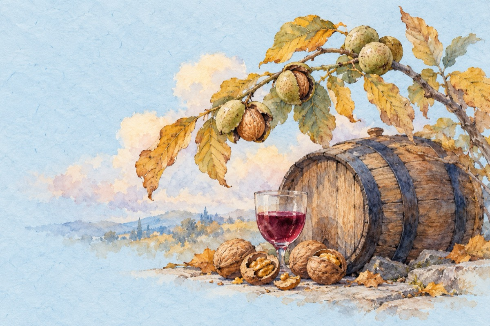

Când nucile se coc
Când toamna nucile se coc
Și vinul fierbe-n poloboc
La toate vreau să fiu părtaș
La puiul fript pe grătăraș
Să dau pe gât un tulburel
S-aud zvonuri fel de fel;
Cum Mița a plecat din sat
Cu un gagiu, da-i bun băiat!
E-a treia oară însurat!...
Și fata lui Fănuș, o aguridă,
S-a-ntors acasă că-i gravidă
La popă a mărturisit
Că el e tatăl fericit!...
Baba Rada, de-atâta bucurie
Cică-a băut multă răchie
Nici cum o cheamă nu mai știe
Iar moș Vasile se distrează
Cu Veta pe care-o curtează
Până și popa nost’ din sat
La o pomană s-a-mbătat
Și sincer a mărturisit
Că și cu Veta s-a iubit.
Și-acum e în bătălie,
Cu păgubitul moș Vasile!
Șefu’ de post când a aflat
Cu Veta ce s-a întâmplat
S-a dus la popă ca mascat
Și spatele i l-a-ndreptat!
Popa se zvonește-n sat
Că în altar s-a încuiat
Și stă în grija Domnului
De frica jandarmului!
C-așa-i când nucile se coc
Și vinul fierbe-n poloboc
Cu-o mămăligă și-o pastramă
Trăiești din plin, doar este toamnă!
Vasile Groza